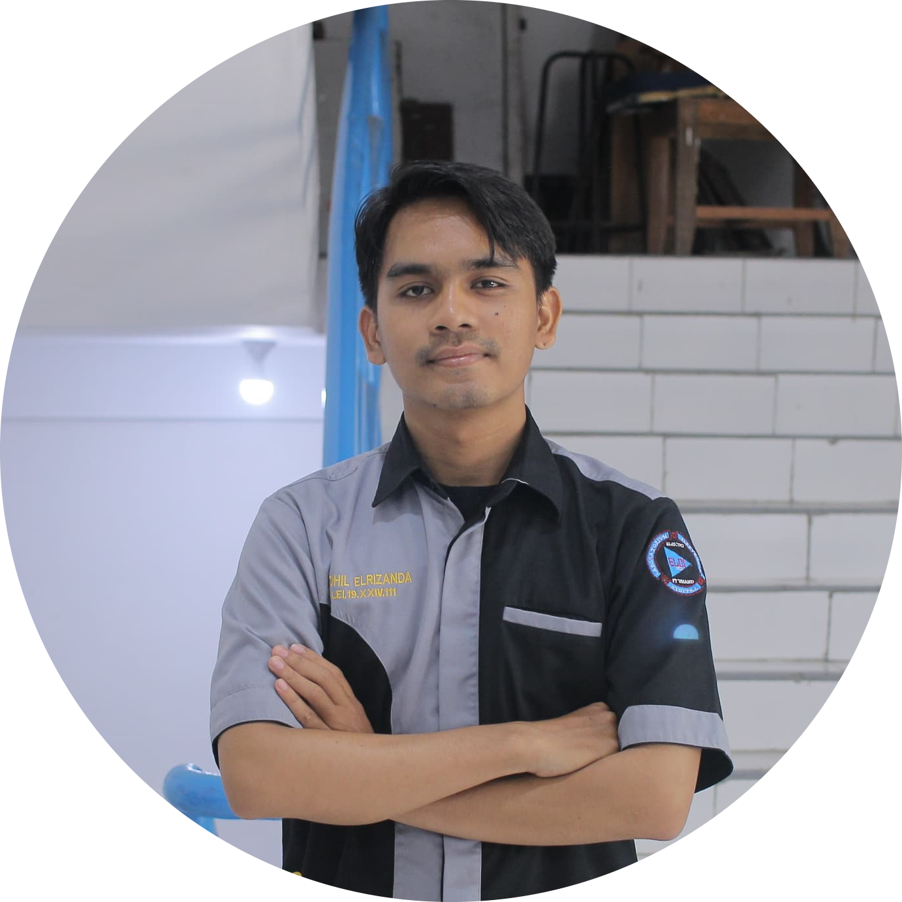
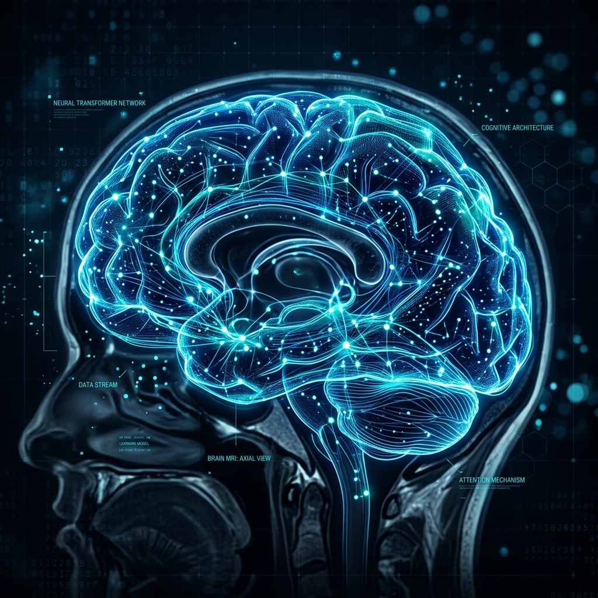
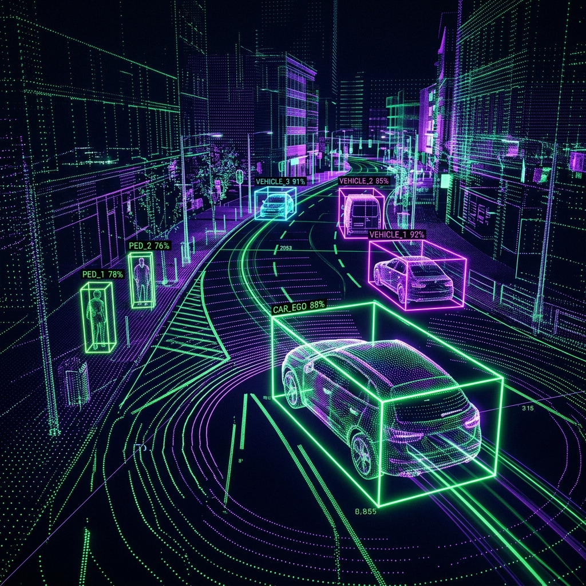
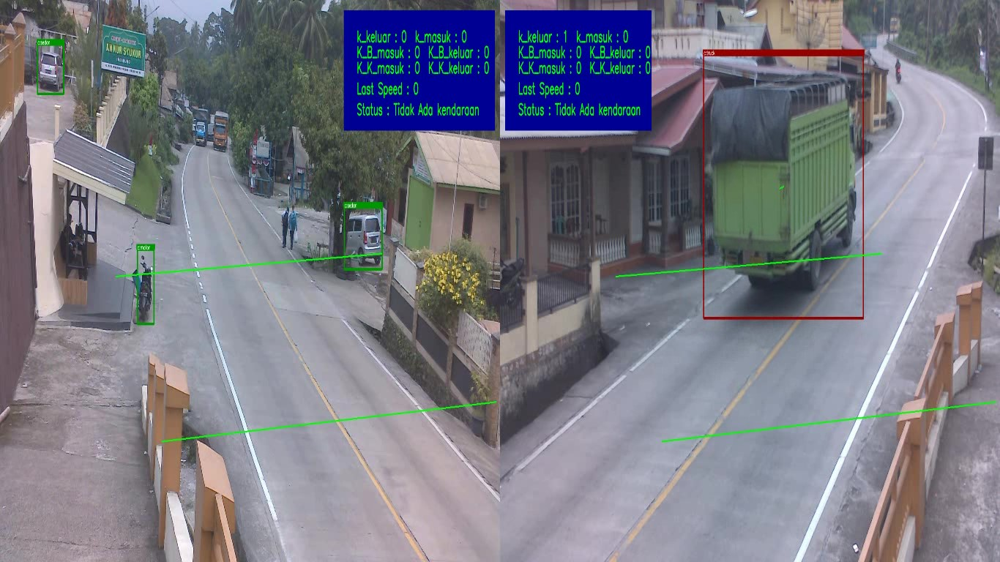
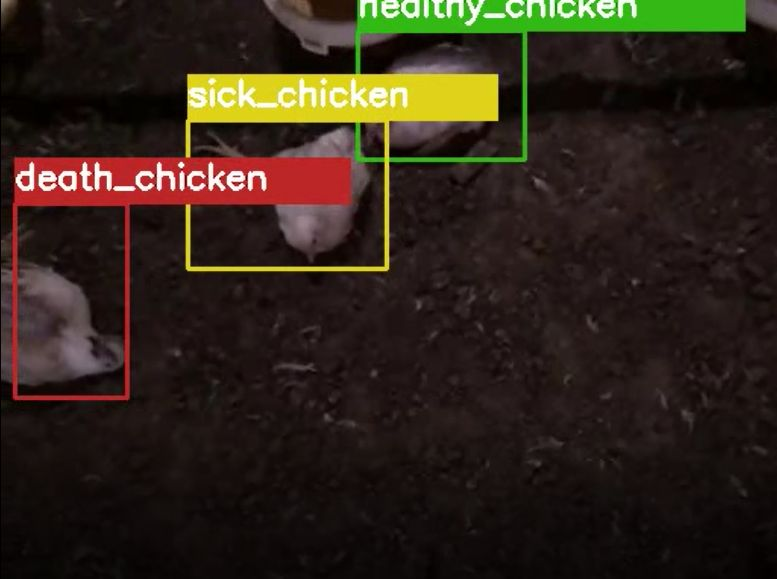
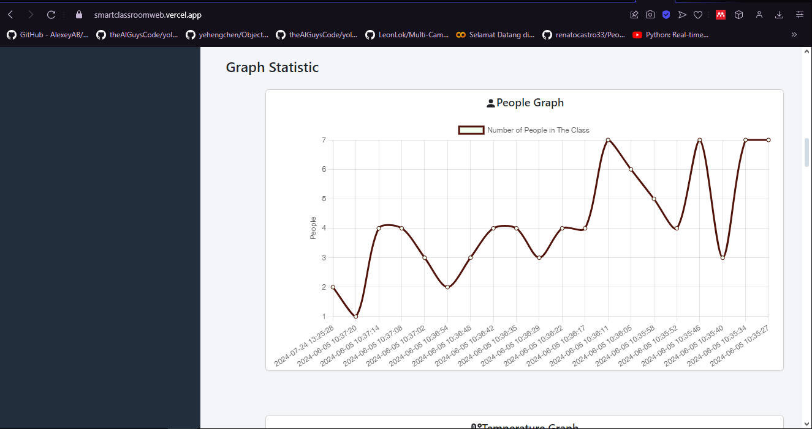

About Me

I am an AI/ML Engineer and master's student at Institut Teknologi Bandung (ITB), Indonesia, specializing in deep learning for multimodal perception and language understanding. My work spans computer vision, natural language processing, and knowledge-augmented AI systems, with a focus on vision-language modeling, crossmodal retrieval, and representation learning.
My current thesis at ITB's AI program focuses on Knowledge Distillation for 3D Object Detection, bridging high-performance multimodal models (camera + LiDAR) with real-time edge deployment — a core challenge in autonomous driving and robotics.
Education
-
M.Eng. in Informatics (Artificial Intelligence)
Institut Teknologi Bandung (ITB) · 2024 – Present
Thesis: Optimizing multimodal 3D object detection using camera and LiDAR with knowledge distillation. -
B.Eng. in Electrical Engineering (Control & Electronics)
Andalas University · 2019 – 2023 · GPA: 3.65 / 4.00
Thesis: Vision-based vehicle safety system using YOLOv5 for real-time detection.
Professional Experience
AI Engineer
- Working full-time on cutting-edge artificial intelligence solutions.
- Implementing advanced multimodal and vision-language modeling architectures.
Computer Vision Engineer
- Developing robust computer vision pipelines for industrial use cases.
- Focusing on real-time object detection and embedded edge deployment.
Capstone Project Advisor
- Guided teams on end-to-end ML system design and deployment.
- Mentored participants on AI fundamentals, experimentation, and error analysis methodology.
Electrical & Instrumentation Intern
- Designed an ANN model to predict cement smoothness (MAE: 0.89, MSE: 0.75).
- Evaluated models collaboratively with factory engineering staff.
Featured Projects

Alzheimer's Disease Stage Classification
Designed a pipeline comparing Swin Transformers vs CNNs for brain MRI classification. Swin-Base achieved 96.2% accuracy, outperforming baselines.

BEVFusion on CARLA Simulator Data
Generated synchronized LiDAR + camera samples in CARLA. Trained BEVFusion and built a web dashboard for 3D bounding box visualization.
Graph-RAG Chatbot for Drug Repositioning
Integrated PubMed embeddings, vector search, and Neo4j for semantic QA over biomedical entities and relations for explainable discovery.

Vision-Based Vehicle Safety System
Trained YOLOv5 on custom-labeled images for sharp-turn vehicle safety detection. Deployed on Raspberry Pi for real-time edge inference.

Chicken Monitoring System
Implemented YOLOv4 on AWS for monitoring broiler chickens to reduce disease spread. Deployed end-to-end with a real-time web dashboard.

Smart Classroom System
Collected sensor data through API, stored in MongoDB, and visualized via React.js front-end for future research analytics.
Technical Skills
Programming Languages
ML / DL Frameworks
AI Domains & Specializations
MLOps & Tools